version
0.9.17
A simple drawing program for children
Copyright 2002-2007 by Bill Kendrick and others
New Breed Software
bill@newbreedsoftware.com
http://www.tuxpaint.org/
June 14, 2002 - April 24, 2007
Copyright 2002-2007 by Bill Kendrick and others
New Breed Software
bill@newbreedsoftware.com
http://www.tuxpaint.org/
June 14, 2002 - April 24, 2007
What Is 'Tux Paint?'
Tux Paint is a free drawing program designed for young children (kids ages 3 and up). It has a simple, easy-to-use interface, fun sound effects, and an encouraging cartoon mascot who helps guide children as they use the program. It provides a blank canvas and a variety of drawing tools to help your child be creative.
License:
Tux Paint is an Open Source project, Free Software released under the GNU General Public License (GPL). It is free, and the 'source code' behind the program is available. (This allows others to add features, fix bugs, and use parts of the program in their own GPL'd software.)
See COPYING.txt for the full text of the GPL license.
Objectives:
- Easy and Fun
- Tux Paint is meant to be a simple drawing program for young children. It is not meant as a general-purpose drawing tool. It is meant to be fun and easy to use. Sound effects and a cartoon character help let the user know what's going on, and keeps them entertained. There are also extra-large cartoon-style mouse pointer shapes.
- Extensibility
- Tux Paint is extensible. Brushes and "rubber stamp" shapes can be dropped in and pulled out. For example, a teacher can drop in a collection of animal shapes and ask their students to draw an ecosystem. Each shape can have a sound which is played, and textual facts which are displayed, when the child selects the shape.
- Portability
- Tux Paint is portable among various computer platforms: Windows, Macintosh, Linux, etc. The interface looks the same among them all. Tux Paint runs suitably well on older systems (like a Pentium 133), and can be built to run better on slow systems.
- Simplicity
- There is no direct access to the computer's underlying intricacies. The current image is kept when the program quits, and reappears when it is restarted. Saving images requires no need to create filenames or use the keyboard. Opening an image is done by selecting it from a collection of thumbnails. Access to other files on the computer is restricted.
Loading Tux Paint
Linux/Unix Users
Tux Paint should have placed a laucher icon in your KDE and/or GNOME menus, under 'Graphics.'
Alternatively, you can run the following command at a shell prompt (e.g., "$"):
$ tuxpaintIf any errors occur, they will be displayed on the terminal (to "stderr").
Windows Users
Tux PaintIf you installed Tux Paint on your computer using the 'Tux Paint Installer,' it will have asked you whether you wanted a 'Start' menu short-cut, and/or a desktop shortcut. If you agreed, you can simply run Tux Paint from the 'Tux Paint' section of your 'Start' menu (e.g., under "All Programs" on Windows XP), or by double-clicking the "Tux Paint" icon on your desktop.
If you installed Tux Paint using the 'ZIP-file' download, or if you used the 'Tux Paint Installer,' but chose not to have shortcuts installed, you'll need to double-click the "
tuxpaint.exe" icon in the 'Tux Paint' folder on your computer.By default, the 'Tux Paint Installer' will put Tux Paint's folder in "
C:\Program Files\", though you may have changed this when the installer ran.If you used the 'ZIP-file' download, Tux Paint's folder will be wherever you put it when you unzipped the ZIP file.
Mac OS X Users
Simply double-click the "Tux Paint" icon.
Title Screen
When Tux Paint first loads, a title/credits screen will appear.
Once loading is complete, press a key or click on the mouse to continue. (Or, after about 30 seconds, the title screen will go away automatically.)
Main Screen
The main screen is divided into the following sections:
- Left Side: Toolbar
The toolbar contains the drawing and editing controls.
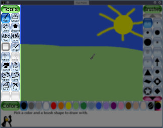
- Middle: Drawing Canvas
The largest part of the screen, in the center, is the drawing canvas. This is, obviously, where you draw!
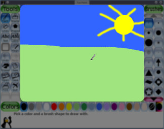
- Right Side: Selector
Depending on the current tool, the selector shows different things. e.g., when the Paint Brush tool is selected, it shows the various brushes available. When the Rubber Stamp tool is selected, it shows the different shapes you can use.
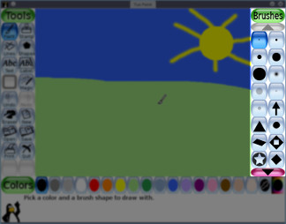
- Lower: Colors
A palette of available colors are shown near the bottom of the screen.
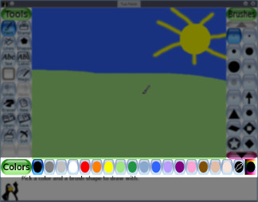
(NOTE: You can define your own colors for Tux Paint. See the "Options" documentation.)
- Bottom: Help Area
At the very bottom of the screen, Tux, the Linux Penguin, provides tips and other information while you draw.
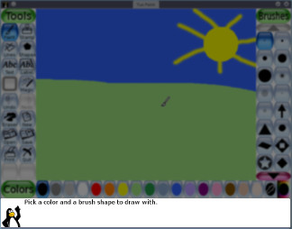
Available Tools
Drawing Tools
- Paint (Brush)
- 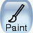
The Paint Brush tool lets you draw freehand, using various brushes (chosen in the Selector on the right) and colors (chosen in the Color palette towards the bottom).
If you hold the mouse button down, and move the mouse, it will draw as you move.
As you draw, a sound is played. The bigger the brush, the lower the pitch.
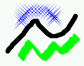
- Stamp (Rubber Stamp)
The Stamp tool is like a rubber stamp, or stickers. It lets you paste pre-drawn or photographic images (like a picture of a horse, or a tree, or the moon) in your picture.
As you move the mouse around, an outline follows the mouse, showing where the stamp will be placed.
Different stamps can have different sound effects. Some stamps can be colored or tinted.
Stamps can be shrunk and expanded, and many stamps can be flipped vertically, or displayed as a mirror-image, using controls at the bottom right of the screen.
(NOTE: If the "
nostampcontrols" option is set, Tux Paint won't display the Mirror, Flip, Shrink and Grow controls for stamps. See the "Options" documentation.)
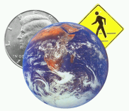
- Lines
This tool lets you draw straight lines using the various brushes and colors you normally use with the Paint Brush.
Click the mouse and hold it to choose the starting point of the line. As you move the mouse around, a thin 'rubber-band' line will show where the line will be drawn.
Let go of the mouse to complete the line. A "sproing!" sound will play.
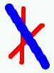
- Shapes
- 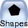
This tool lets you draw some simple filled, and un-filled shapes.
Select a shape from the selector on the right (circle, square, oval, etc.).
In the canvas, click the mouse and hold it to stretch the shape out from where you clicked. Some shapes can change proportion (e.g., rectangle and oval), others cannot (e.g., square and circle).
Let go of the mouse when you're done stretching.
- Normal Mode
Now you can move the mouse around the canvas to rotate the shape.
Click the mouse button again and the shape will be drawn in the current color.
- Simple Shapes Mode
- If simple shapes are enabled (e.g., with the "
--simpleshapes" option), the shape will be drawn on the canvas when you let go of the mouse button. (There's no rotation step.)
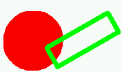
- Text
Choose a font (from the 'Letters' available on the right) and a color (from the color palette near the bottom). Click on the screen and a cursor will appear. Type text and it will show up on the screen.
Press [Enter] or [Return] and the text will be drawn onto the picture and the cursor will move down one line.
Alternatively, press [Tab] and the text will be drawn onto the picture, but the cursor will move to the right of the text, rather than down a line, and to the left. (This can be useful to create a line of text with mixed colors, fonts, styles and sizes:
Likethis.)Clicking elsewhere in the picture while the text entry is still active causes the current line of text to move to that location (where you can continue editing it).
- International Character Input
Tux Paint allows inputting characters in different languages. Most Latin characters (A-Z, ñ, egrave;, etc.) can by entered directly. Some languages require that Tux Paint be switched into an alternate input mode before entering, and some characters must be composed using numerous keypresses.
When Tux Paint's locale is set to one of the supported languages that require an alternate input mode, press the right [Alt] or right [Option] key to toggle between the normal (Latin character) and locale-specific modes.
Currently supported locales, and their input methods, are listed below. Note: Many fonts do not include all characters for all languages.
- Japanese — Romanized Hiragana and Katakana
- Korean — Hangul 2-Bul
- Magic (Special Effects)
The 'Magic' tool is actually a set of special tools. Select one of the "magic" effects from the selector on the right, and then click and drag around the picture to apply the effect.
- Fill
- This floods the picture with a color. It lets you quickly fill parts of the picture, as if it were a coloring book.
- Grass
- This paints grass on the image. The higher up the canvas, the smaller the grass is drawn, giving an illusion of perspective. The grass can be tinted various greenish hues by selecting different colors in the color palette.
- Bricks (Large and Small)
- These two tools intelligently paint large and small brick patterns on the canvas. The bricks can be tinted various redish hues by selecting different colors in the color palette.
- Rainbow
- This is similar to the paint brush, but as you move the mouse around, it cycles through a spectrum of bright colors.
- Sparkles
- This draws glowing sparkles on the canvas, in the currently-selected color.
- Blur
- This makes the picture fuzzy wherever you drag the mouse.
- Smudge
- This pushes the colors around under the mouse, like finger painting with wet paint.
- Lighten
- This fades the colors wherever you drag the mouse. (Do it to the same spot many times, and it will eventually become white.)
- Darken
- This dakrens the colors wherever you drag the mouse. (Do it to the same spot many times, and it will eventually become black.)
- Chalk
- This makes parts of the picture (where you move the mouse) look like a chalk drawing.
- Blocks
- This makes the picture blocky looking ("pixelated") wherever you drag the mouse.
- Negative
- This inverts the colors wherever you drag the mouse. (e.g., white becomes black, and vice versa.)
- Tint
- This changes the parts of the picture to the selected color.
- Drip
- This makes the paint "drip" wherever you move the mouse.
- Cartoon
- This makes the picture look like a cartoon — with thick outlines and bright, solid colors — wherever you move the mouse.
- Mirror
- When you click the mouse in your picture with the "Mirror" magic effect selected, the entire image will be reversed, turning it into a mirror image.
- Flip
- Similar to "Mirror." Click and the entire image will be turned upside-down.
- Eraser
This tool is similar to the Paint Brush. Wherever you click (or click and drag), the picture will be erased either to white, or to the background picture, if you began the current drawing with a 'Starter' image.
A number of eraser sizes are available.
As you move the mouse around, a square outline follows the pointer, showing what part of the picture will be erased to white.
As you erase, a "squeaky clean" eraser/wiping sound is played.
Other Controls
- Undo
Clicking this tool will undo the last drawing action. You can even undo more than once!
Note: You can also press [Control]-[Z] on the keyboard to undo.
- Redo
Clicking this tool will redo the drawing action you just "undid" with the 'Undo' button.
As long as you don't draw again, you can redo as many times as you had "undone!"
Note: You can also press [Control]-[R] on the keyboard to redo.
- New
Clicking the "New" button will start a new drawing. You will first be asked whether you really want to do this.
Note: You can also press [Control]-[N] on the keyboard to start a new drawing.
- Open
This shows you a list of all of the pictures you've saved. If there are more than can fit on the screen, use the "Up" and "Down" arrows at the top and bottom of the list to scroll through the list of pictures.
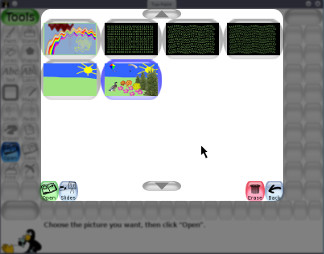
Click a picture to select it, then...
'Starter' Images
Click the green "Open" button at the lower left of the list to load the selected picture.
(Alternatively, you can double-click a picture's icon to load it.)
Click the brown "Erase" (trash can) button at the lower right of the list to erase the selected picture. (You will be asked to confirm.)
- 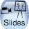
Click the blue "Slides" (slide projector) button at the lower left to go to slideshow mode. See "Slides", below, for details.
Or click the red "Back" arrow button at the lower right of the list to cancel and return to the picture you were drawing.
Along with pictures you've created, Tux Paint can provided 'Starter' images. Opening them is like creating a new picture, except that the picture isn't blank. 'Starters' can be like a page from a coloring book (a black-and-white outline of a picture, which you can then color in), or like a 3D photograph, where you draw the bits in between.
'Starter' images have a green background in the 'Open' screen. (Normal images have a blue background.) When you load a 'Starter,' draw on it, and then click 'Save,' it creates a new picture (it doesn't overwrite the original 'Starter,' so you can use it again later).
If choose to open a picture, and your current drawing hasn't been saved, you will be prompted as to whether you want to save it or not. (See "Save," below.)
Note: You can also press [Control]-[O] on the keyboard to get the 'Open' dialog.
- Save
This saves your current picture.
If you haven't saved it before, it will create a new entry in the list of saved images. (i.e., it will create a new file)
Note: It won't ask you anything (e.g., for a filename). It will simply save the picture, and play a "camera shutter" sound effect.
If you HAVE saved the picture before, or this is a picture you just loaded using the "Open" command, you will first be asked whether you want to save over the old version, or create a new entry (a new file).
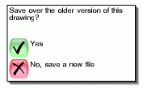
(NOTE: If either the "
saveover" or "saveovernew" options are set, it won't ask before saving over. See the "Options" documentation.)Note: You can also press [Control]-[S] on the keyboard to save.
Click this button and your picture will be printed!
On most platforms, you can also hold the [Alt] key while clicking the 'Print' button to get a printer dialog, as long as you're not running Tux Paint in fullscreen mode. See below.
- Disabling Printing
If the "noprint" option was set (either with "
noprint=yes" in Tux Paint's configuration file, or using "--noprint" on the command-line), the "Print" button will be disabled.See the "Options" documentation.)
- Restricting Printing
If the "printdelay" option was used (either with "
printdelay=SECONDS" in the configuration file, or using "--printdelay=SECONDS" on the command-line), you can only print once every SECONDS seconds.For example, with "
printdelay=60", you can print only once a minute.See the "Options" documentation.)
- Printing Commands
(Linux and Unix only)
Tux Paint prints by generating a PostScript representation of the drawing and sending it to an external program. By default, the program is:
lprThis command can be changed by setting the "printcommand" value in Tux Paint's configuration file.
If the [Alt] key on the keyboard is being pushed while clicking the 'Print' button, as long as you're not in fullscreen mode, an alternative program is run. By default, the program is KDE's graphical print dialog:
kprinterThis command can be changed by setting the "altprintcommand" value in Tux Paint's configuration file.
For information on how to change the printing commands, see the "Options" documentation.
- Printer Settings
(Windows only)
By default, Tux Paint simply prints to the default printer with default settings when the 'Print' button is pushed.
However, if you hold the [Alt] key on the keyboard while pushing the button, as long as you're not in fullscreen mode, a Windows print dialog will appear, where you can change the settings.
You can have the printer configuration changes stored by using the "printcfg" option, either by using "
--printcfg" on the command-line, or "printcfg=yes" in Tux Paint's own configuration file ("tuxpaint.cfg").If the "printcfg" option is used, printer settings will be loaded from the file "
print.cfg" in your personal folder (see below). Any changes will be saved there as well.See the "Options" documentation.)
- Printer Dialog Options
By default, Tux Paint only shows the printer dialog (or, on Linux/Unix, runs the "altprintcommand", e.g., "kprinter" instead of "lpr") if the [Alt] key is held while clicking the 'Print' button.
However, this behavior can be changed. You can have the printer dialog always appear by using "
--altprintalways" on the command-line, or "altprint=always" in Tux Paint's configuration file. Or, you can prevent the [Alt] key from having any effect by using "--altprintnever", or "altprint=never".See the "Options" documentation.)
- Slides
The "Slides" button is available in the "Open" dialog. It displays a list of your saved files, similar to the "Open" dialog, but without listing 'Starter' images.
Click each of the images you wish to display in a slideshow-style presentation, one by one. A digit will appear over each image, letting you know in which order they will be displayed.
You can click a selected image to unselect it (take it out of your slideshow).
A sliding scale at the lower left of the screen (next to the "Play" button) can be used to adjust the speed of the slideshow, from slowest to fastest. Choose the leftmost setting to disable automatic advancement — you will need to press a key or click to go to the next slide (see below).
When you're ready, click the "Play" button to begin the slideshow. (Note: If you hadn't selected ANY images, then ALL images will be played in the slideshow.)
During the slideshow, press [Space], [Enter] or [Return] or the [Right Arrow], or click the "Next" button at the lower left, to manually advance to the next slide. Press [Left] to go back to the previous slide.
Press [Escape], or click the "Back" button at the lower right, to exit the slideshow and return to the slideshow image selection screen.
Click "Back" in the slideshow image selection screen to return to the "Open" dialog.
- Quit
Clicking the "Quit" button, closing the Tux Paint window, or pushing the [Escape] key will quit Tux Paint.
You will first be prompted as to whether you really want to quit.
If you choose to quit, and you haven't saved the current picture, you will first be asked if wish to save it. If it's not a new image, you will then be asked if you want to save over the old version, or create a new entry. (See "Save" above.)
NOTE: If the image is saved, it will be reloaded automatically the next time you run Tux Paint!
NOTE: The "Quit" button and [Escape] key can be disabled (e.g., by selecting "Disable 'Quit' Button" in Tux Paint Config. or running Tux Paint with the "
--noquit" command-line option).In that case, the "window close" button on Tux Paint's title bar (if not in fullscreen mode) or the [Alt] + [F4] key sequence may be used to quit.
If neither of those are possible, the key sequence of [Shift] + [Control] + [Escape] may be used to quit. (See the "Options" documentation.)
- Sound Muting
There is no on-screen control button at this time, but by pressing [Alt] + [S], sound effects can be disabled and re-enabled (muted and unmuted) while the program is running.
Note that if sounds are completely disabled (e.g., by unselecting "Enable Sound Effects" in Tux Paint Config or running Tux Paint with the "
--nosound" command-line option), the [Alt] + [S] key sequence has no effect. (i.e., it cannot be used to turn on sounds when the parent/teach wants them disabled.)
Since Tux Paint's 'Open' dialog only displays pictures you created with Tux Paint, what if you want to load some other picture or photograph into Tux Paint to edit?
To do so, you simply need to convert the picture into a PNG (Portable Network Graphic) image file, and place it in Tux Paint's "saved" directory:
- Windows
- Inside the user's "
Application Data" folder, e.g.:"C:\Documents and Settings\(user name)\Application Data\TuxPaint\saved\"- Mac OS X
- Inside the user's "
Library" folder:"/Users/(user name)/Library/Application Support/Tux Paint/saved/"- Linux/Unix
- Inside a hidden "
.tuxpaint" directory, in the user's home directory: "$(HOME)/.tuxpaint/saved/"Using '
tuxpaint-import'Linux and Unix users can use the "
tuxpaint-import" shell script which gets installed when you install Tux Paint. It uses some NetPBM tools to convert the image ("anytopnm"), resize it so that it will fit in Tux Paint's canvas ("pnmscale"), and convert it to a PNG ("pnmtopng").It also uses the "
date" command to get the current time and date, which is the file-naming convention Tux Paint uses for saved files. (Remember, you are never asked for a 'filename' when you go to Save or Open pictures!)To use '
tuxpaint-import', simply run the command from a command-line prompt and provide it the name(s) of the file(s) you wish to convert.They will be converted and placed in your Tux Paint 'saved' directory. (Note: If you're doing this for a different user - e.g., your child, you'll need to make sure to run the command under their account.)
Example:
$ tuxpaint-import grandma.jpg
grandma.jpg -> /home/username/.tuxpaint/saved/20020921123456.png
jpegtopnm: WRITING A PPM FILEThe first line ("
tuxpaint-import grandma.jpg") is the command to run. The following two lines are output from the program while it's working.Now you can load Tux Paint, and a version of that original picture will be available under the 'Open' dialog. Just double-click its icon!
Doing it Manually
Windows, Mac OS X and BeOS users must currently do the conversion manually.
Load a graphics program that is capable of both loading your picture and saving a PNG format file. (See the documentation file "PNG.txt" for a list of suggested software, and other references.)
Reduce the size of the image to no wider than 448 pixels across and no taller than 376 pixels tall. (i.e., the maximum size is 448 x 376 pixels)
Save the picture in PNG format. It is highly recommended that you name the filename using the current date and time, since that's the convention Tux Paint uses:
YYYYMMDDhhmmss.png
- YYYY = Year
- MM = Month (01-12)
- DD = Day (01-31)
- HH = Hour, in 24-hour format (00-23)
- mm = Minute (00-59)
- ss = Second (00-59)
e.g.:
20020921130500- for September 21, 2002, 1:05:00pmPlace this PNG file in your Tux Paint '
saved' directory. (See above.)
Other documentation included with Tux Paint (in the "docs" folder/directory) include:
- AUTHORS.txt
List of authors and contributors- CHANGES.txt
Summary of changed between releases- COPYING.txt
Copying license (The GNU General Public License)- INSTALL.txt
Instructions for compiling/installing, when applicable- EXTENDING.html
Detailed instructions on creating brushes, stamps and starters, and adding fonts, to extend Tux Paint.- OPTIONS.html
Detailed instructions on command-line and configuration-file options, for those who don't want to use Tux Paint Config.- PNG.txt
Notes on creating PNG format bitmapped images for use in Tux Paint- SVG.txt
Notes on creating SVG format vector images for use in Tux Paint
If you need help, feel free to contact New Breed Software:
http://www.newbreedsoftware.com/You may also wish to participate in the numerous Tux Paint mailing lists:
http://www.tuxpaint.org/lists/
![[Title Screenshot]](images/tuxpaint-title.jpg)